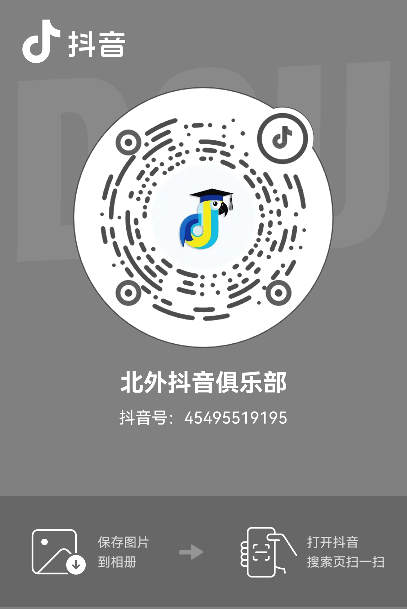

首页_Home
学术经历_Academic Experience
项目经历_Project Experience
传媒实践_Media-Related Experience
我的传媒实践
北外官方融媒体平台运营 - 2022至今
抖音俱乐部北外分社 - 2025至今
新青年国际传播工作室 - 2024.09~2025.03
厦外模联XMFLSMUNA微信公众号 - 2019~2021
北外官方融媒体平台
策划统筹
北外快闪合唱《世界赠予我的》，愿所有美好向你奔赴而来
- 2025 年 04 月 03 日
可访问微信视频号搜索
倒计时30天，时间定会予你最美的回响！
- 2024 年 11 月 21 日
“拼图” 挑战，解锁北外限定美景
- 2023 年 11 月 14 日
致敬，每一位平凡的 “北外人”
- 2023 年 05 月 01 日
制图
红包封面制作
过年好！北外蛇年红包🧧封面惊喜上新！
- 2025 年 01 月 29 日
蛇年大吉！北外新年红包🧧封面如期而至！
- 2025 年 01 月 28 日
过年好！北外龙年🧧惊喜上新 + 返场！
- 2024 年 02 月 10 日
龙行龘龘，前程朤朤！快来和 BFSUers 一起抢红包，过大年！
- 2024 年 02 月 09 日
动图制作
冲刺30天，来北外，见山海！
- 2025 年 05 月 08 日
报名倒计时！我们在北外，等你！
- 2025 年 04 月 09 日
是北外的“crush”瞬间呀！
- 2025 年 03 月 16 日
《发现新主播》关注量破亿！北外专场复选，就在今晚！
- 2025 年 01 月 15 日
2025，新“起点”，启新程！
- 2025 年 01 月 01 日
新生，新生！
- 2024 年 10 月 08 日
央视纪录片《新中国——平凡而闪光的足迹》 | 伊莎白：感谢父母把我生在中国
- 2024 年 10 月 30 日
你好，北京外国语大学！（新华网共创）
- 2024 年 09 月 21 日
新学期，一起解锁“北外生活”的N种打开方式
- 2024 年 09 月 20 日
谁懂啊，和北外一起上《亲爱的学弟学妹》啦！
- 2024 年 07 月 13 日
本周五晚，和学长学姐一起重回北外！
- 2024 年 07 月 09 日
你是哪种 MBTI 型的北外青年？
- 2024 年 07 月 03 日
用语言，创造无限可能！北外 2024 年招生宣传片重磅发布！
- 2024 年 06 月 10 日
原来，北外还有这样的宝藏博物馆？！
- 2024 年 05 月 18 日
党琦：“北外送我的三件礼物”
- 2024 年 05 月 17 日
现在的你 ⅹ 30 天 = 我们终将相见
- 2024 年 05 月 08 日
“是北外给了我翅膀，让我飞到想去的远方”
- 2024 年 04 月 29 日
“战地的青春，是北外赋予我的使命”
- 2024 年 03 月 12 日
“从北外出发，我想看看自己可以走多远”
- 2024 年 03 月 28 日
心动！当 “美拉德” 风吹进北外
- 2023 年 11 月 07 日
摔跤吧！北外角觝队
- 2023 年 10 月 28 日
如果你要写北外……
- 2023 年 10 月 08 日
其他制图
100天！我们在北外，等你！
- 2025 年 02 月 27 日
北外，那些跃出画框的生命力
- 2024 年 12 月 17 日
换一种方式，爱上北外
- 2023 年 10 月 02 日
听北外留学生说他们的 “母亲节”
- 2023 年 05 月 14 日
排版
非新闻排版
终于等到你，北外的初雪！
- 2023 年 12 月 11 日
如果你要写北外……
- 2023 年 10 月 08 日
国际博物馆日，一起走进北外校史馆
- 2023 年 05 月 18 日
新闻排版
共享中国语言文化盛宴——2025“国际中文日”在北京启动
- 2025 年 04 月 18 日
欧盟委员会创新、研究、文化、教育与青年事务委员伊莉安娜・伊万诺娃访问北外
- 2024 年 03 月 31 日
镜观世界，笔写担当 —— 北外国传班学子奔赴山海，不负热爱
- 2024 年 01 月 16 日
北外这两项成果获奖！
- 2023 年 12 月 19 日
北外参加 2023 世界中文大会
- 2023 年 12 月 11 日
北京外国语大学国际商学院院长公开招聘公告
- 2023 年 09 月 18 日
北外 CSSCI 期刊 / 集刊 + 2！
- 2023 年 08 月 29 日
祝贺！北外首个留学生校友会 —— 马来西亚留学生校友会成立
- 2023 年 08 月 10 日
多语讲述北外育人故事 | 陆蕴联：坚守一线教学 培育非通英才
- 2023 年 08 月 05 日
杨丹校长出席 2023 年 “国际中文日” 系列活动
- 2023 年 04 月 21 日
北外党委理论学习中心组专题aceezza精神
- 2022 年 10 月 26 日
北外开展与清华大学、北京大学部分优质通识课程校际互选
- 2022 年 09 月 20 日
文案
冬天很冷，但北外很暖🥰
- 2024 年 11 月 12 日
新学期，总要加入一次“官微”吧！
- 2024 年 09 月 16 日
就在明天！北外2024级新生开学典礼直播预告
- 2024 年 09 月 08 日
毕业典礼倒计时！特别鸣谢，一起成长的我们！
- 2024 年 06 月 27 日
致敬，每一位平凡的 “北外人”
- 2023 年 05 月 01 日
倒计时十天，带你走进考研人的 “十二时辰”
- 2022 年 12 月 14 日
北外新青年国际传播工作室
栏目运营
华夏足迹 | 告别“走马观花”，拥抱“身临其境”
- 2025 年 02 月 25 日
华夏足迹 | 古韵今风，宝藏启智
- 2025 年 01 月 24 日
华夏足迹 | 译韵华夏：文化译例探析
- 2024 年 12 月 22 日
华夏足迹 | 以语为媒沟通大千世界，争分夺秒捕捉时代心音
- 2024 年 11 月 27 日
华夏足迹｜千年女神护一方烟火，万里远航念迢迢故乡
- 2024 年 11 月 22 日
日常运营
国际艺术管理 | 期刊论文速递（第十二期）
- 2025 年 03 月 17 日
国际艺术管理 | 期刊论文速递（第十一期）
- 2025 年 02 月 21 日
社会绿动 | 中国青年推动绿色传播发展
- 2025 年 01 月 21 日
守护绿色，传承古韵——探寻历史上的环保智慧
- 2024 年 11 月 26 日
区域国别｜全球治理：经济不平等和虚假信息的双重挑战
- 2024 年 11 月 21 日
区域国别｜Annual Review of Political Science
- 2024 年 11 月 21 日
味满全球｜川面
- 2024 年 11 月 7 日
区域国别｜新刊速递 Foreign Affairs Vol.103, No. 6
- 2024 年 11 月 5 日
中国美景与生态治理：影视镜头中的“绿色中国”
- 2024 年 11 月 1 日
China Tra-woo!｜Shanghai: The Pearl of the Orient
- 2024 年 11 月 1 日
国际组织 | 全球健康治理主题期刊论文速递
- 2024 年 10 月 17 日
画说中国｜中华民族大揭秘：你不知道的多彩文化！
- 2024 年 10 月 17 日
华夏足迹 | 逐水草而居传千载文化，踏时代浪潮展游牧新篇
- 2024 年 10 月 12 日
华夏足迹 | 万里为邻尽抒华夏气象，服章礼仪回响文明足音
- 2024 年 10 月 10 日
十里不同音 | 国庆联动，方言荟萃
- 2024 年 10 月 8 日
十里不同音 | 首发！国庆联动，方言荟萃
- 2024 年 10 月 7 日
社会绿动 | 节日互动与流动的风景
- 2024 年 10 月 7 日
社会绿动 | 明镜寻真：那些“脏乱差”带来的人生困境
- 2024 年 10 月 4 日
China Tra-woo!丨Welcome to the capital of China, Beijing!
- 2024 年 9 月 30 日
寻找special中国艺术家（FSCA） | 吹糖的艺术：世界千变万化，糖人握于手间
- 2024 年 9 月 28 日
民族新语 | 你看，这朵来自云南的花盛放在巴黎！
- 2024 年 9 月 27 日
北外抖音俱乐部
北外抖音俱乐部账号，欢迎关注
